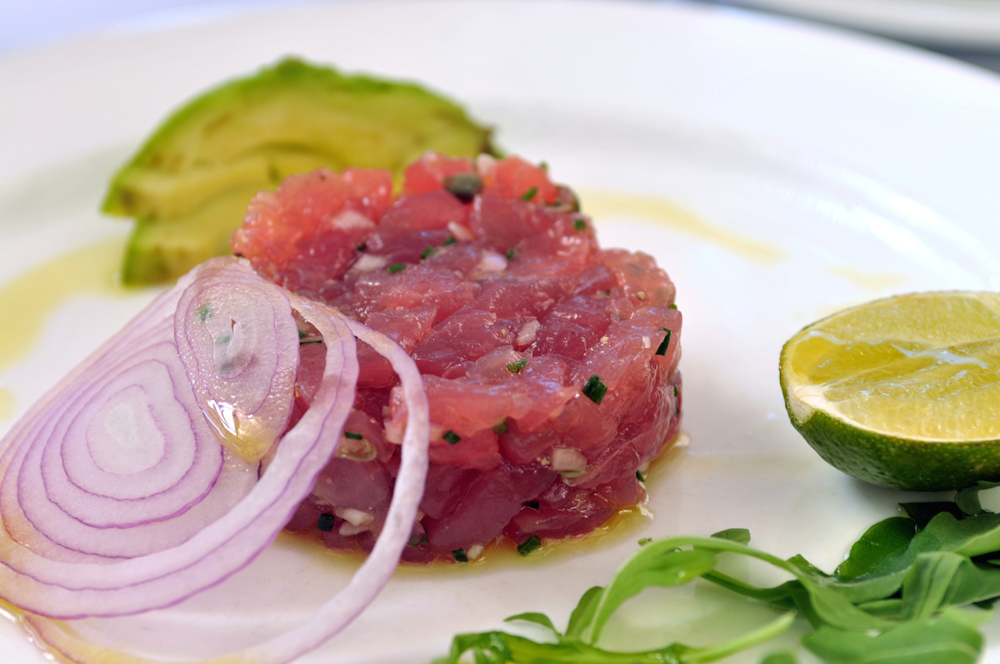

gobask.com
The Best Pescetarian Options in NYC Right Now - Bask
The best pescetarian delivery options in NYC. Bask’s intelligent food filtering algorithm can tell you the best pescetarian take out dishes right now.